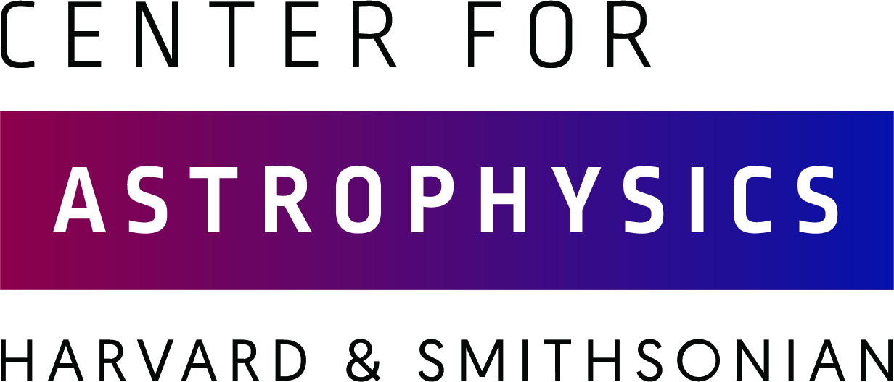
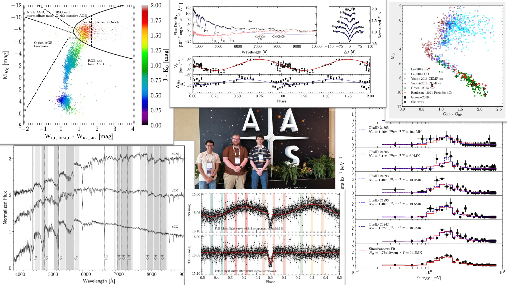

About Me:
I'm an astrophysicist with a passion for understanding the Universe through observations, data, and computation.
“If the stars should appear one night in a thousand years, how would men believe and adore; and preserve for many generations the remembrance of the city of God which had been shown! But every night come out these envoys of beauty, and light the universe with their admonishing smile.”
Currently: Assistant Professor of Physics & Director of Reynold's Observatory
Focus: Binary stars, common-envelope evolution, chemically peculiar stars, stellar evolution with MESA
Professional Appointments
-
 Assistant Professor of PhysicsClarkson University - Department of Physics (2023–Present)
Assistant Professor of PhysicsClarkson University - Department of Physics (2023–Present)As a faculty member at Clarkson University, I lead a research program centered on the evolution and observational signatures of close binary systems and chemically peculiar stars, working closely with undergraduate researchers on computational modeling and data-driven analysis. I design and teach a range of physics and astronomy courses, integrating hands-on, inquiry-based labs and real scientific data into the curriculum to help students engage with modern research methods. In parallel, I am actively involved in outreach and engagement initiatives, including leading programs through the IMPETUS project that connect K–12 students with coding, robotics, and physics through interactive, project-based activities. Through these efforts, I focus on broadening participation in STEM and building pathways for students to engage with science both on campus and in the wider community.
Director of Reynolds ObservatoryClarkson University (2023–Present)I oversee the scientific and technical operation of the facility, including telescope systems, instrumentation, and data infrastructure. My work spans observatory planning and scheduling, maintenance and upgrades of control and imaging systems, and the development of end-to-end data acquisition and reduction workflows to support both research and instructional use. I also lead projects to expand the observatory’s observational capabilities, integrating new hardware and software to improve reliability, automation, and data quality.
 Postdoctoral Scholar Research Associate in AstronomyCalifornia Institute of Technology - Department of Astronomy (2022–2023)Sponsor: Prof. Shri Kulkarni
Postdoctoral Scholar Research Associate in AstronomyCalifornia Institute of Technology - Department of Astronomy (2022–2023)Sponsor: Prof. Shri KulkarniDuring my time at Caltech, I worked with the Zwicky Transient Facility (ZTF) team on survey performance and science. I contributed to the MIRAR photometric reduction pipeline, improving data quality and processing reliability, and was involved with the SEDMv2 instrument on the Kitt Peak 2.1-meter telescope, working on control systems and end-to-end data reduction workflows. In parallel, I advanced my own research program by leading undergraduate projects focused on modeling the formation and evolution of dwarf carbon stars.
- 
SAO Predoctoral FellowCenter for Astrophysics | Harvard & Smithsonian (2017 - 2022)Advisor: Dr. Paul GreenI studied post-mass transfer binary systems and variable stars. My main research focused on dwarf carbon stars, where I conducted observational studies using SDSS, ZTF, Chandra, Hubble, as well as my own follow-up using the MMT and Magellan telescopes. I found that dwarf carbon stars have a binary fraction of 100% and that many of them are in close post-common-envelope binaries.
Graduate ResearcherBoston University (Summer 2017)Advisor: Prof. Wen LiSpace Physics - Van Allen Radiation Belt Electron Storms
Undergraduate Researcher & Teaching AssistantClarkson University (2014–2016)Undergraduate Researcher - Astrophysics (2014–2016).
Undergraduate Physics TA (2015–2016).
Research
My research centers on modeling the evolution of close binary star systems and connecting their observed properties to theory and the current populations of close binary systems. I develop physically motivated, data-driven models that integrate large astronomical surveys with detailed stellar and galactic simulations, with a focus on common-envelope evolution, chemically peculiar stars, and stellar evolution using the MESA framework. My work emphasizes forward modeling, Bayesian inference, and rigorous uncertainty quantification to link observations to theory.
I lead and contribute to projects spanning the full research pipeline, from target selection and observing strategy to data reduction, statistical analysis, and high-performance computing. This includes building scalable workflows for survey and spectroscopic data, fitting multi-component disk–halo models to stellar populations, and developing reproducible computational tools for parameter estimation and model validation to extract robust physical insight from complex, high-dimensional data.
See more about my research hereTeaching

As teachers, we influence more than just the direct education of our students. For some, we are their first introduction to higher education or a particular field. For others, we may be the last science course they take in their formal education. For hopefully a few, we may inspire them to pursue a lifelong career in our fields, which undoubtedly happened to each of us at some point. Whatever the outcome, students' interactions with their professors and classes undoubtedly leave a mark on their education and future. As such, it is imperative that we not only be their teachers, but also their mentors and guides, in exploring their education.
My teaching philosophy centers around the idea that students learn more effectively when they are engaged with the material and participate in their education. The key here is constructing classes in such a way as to cover the typical material needed (think usual lectures of the needed concepts, equations, theorems, derivations) combined with example use of those principles, so students see and, most importantly, do the real-world analysis needed. My goal as an instructor is to instill a sense of appreciation and confidence in students' science abilities and to give them the reasoning and analytical skills necessary to understand and partake in astronomy or physics.
See more about my teaching here